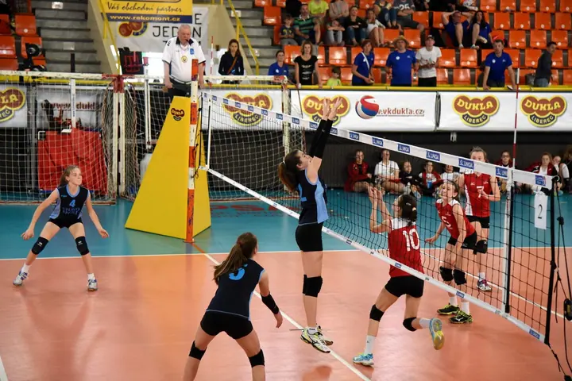
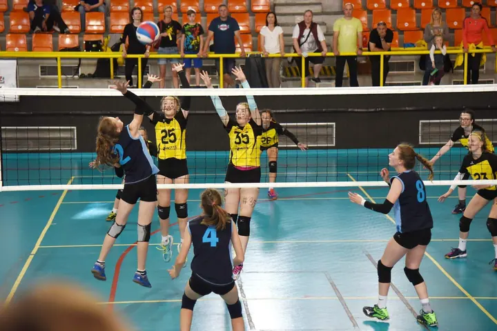

01 / 04
Fotoreportáž ze sportovních a společenských akcí
Fotím turnaje, zápasy i společenské akce. Ukládám víc fotek, aby se na nich pokud možno každý našel a vybral si podle libosti.
Zeptat se na termín→



Fotky ze hřiště, kde se každý najde
Zeptat se na termín →(01) Ahoj
Jmenuji se Láďa Novák a nejčastěji mě potkáte s foťákem u volejbalové sítě . Fotím turnaje a společenské akce , ale i portréty a svatby. Vždycky se snažím, aby se na fotkách našel každý hráč i fanoušek .
(02) Co fotím
01 / 04
Fotím turnaje, zápasy i společenské akce. Ukládám víc fotek, aby se na nich pokud možno každý našel a vybral si podle libosti.
Zeptat se na termín→02 / 04
Menší série do 2 hodin s 10 fotkami nebo větší do 3 hodin s 30 fotkami, v ateliéru nebo v exteriéru. Rodinné focení probíhá stejně jako portrétní.
Zeptat se na termín→03 / 04
Obřad se skupinovým focením, nebo celý den od příprav přes obřad až po hostinu. Z většího množství snímků vždy vybírám ty nejlepší.
Zeptat se na termín→Dále nabízím
Fotím stavby a technické zakázky. Postarám se i o tisk kvalitních zvětšenin, rámování nebo tištěnou fotoknihu.
↗(03) Portfolio
Kliknutím fotku zvětšíte · fotografie jsou ilustrační
(04) Postup
Od první zprávy po hotovou galerii.
Krok 1 z 4
Napište mi nebo zavolejte, o jakou akci nebo focení jde. Společně probereme rozsah, místo a čas.
Krok 2 z 4
Na akci fotím průběžně celou dobu, u portrétů pracujeme v ateliéru nebo venku podle toho, co vám sedne.
Krok 3 z 4
Z většího množství snímků vyberu ty nejlepší a udělám základní úpravy a jednoduchou retuš.
Krok 4 z 4
Fotky vám pošlu v elektronické podobě. Když budete chtít, zajistím i tisk, rámování nebo fotoknihu.
Sportu zdar a volejbalu a horám zvlášť.

(05) Za objektivem
Kamarádi mě znají jako Fotolezce. Fotím hlavně sportovní akce, nejčastěji volejbal, a fotky z nich dávám na Rajče, aby si je každý mohl snadno stáhnout a vybrat si ty své.
Druhou velkou láskou jsou hory. Na webu fotolezec.cz najdete fotky z Alp, And, Pamíru, Himálaje i z treku kolem Mont Blancu. Moje putování po peruánské Cordillera Blanca se dostalo i do televize, do pořadu na Travel Journalu HD+. Ale krásu najdu i kousek za Prahou, třeba na Brdech nebo při bruslení na Orlíku.
Kromě sportu fotím portréty, svatby, rodiny, produkty i stavby. Fotografování se věnuji řadu let a zakládám si na spolehlivosti, precizní práci a osobním přístupu. Sídlím v Praze 10 a s lanem umím zacházet i jinak: s partou z Alpinistu děláme výškové práce.
Láďa
Láďa Novák · Fotograf sportovních akcí a portrétů
Malá série do 2 hodin s 10 fotkami vychází orientačně na 2 800 Kč, větší série do 3 hodin s 30 fotkami na 6 000 Kč. Rodinné focení počítám stejně jako portrétní.
Obřad se skupinovým focením do 4 hodin s 30 fotkami vychází orientačně na 8 000 Kč, celý den do 8 hodin s 60 fotkami na 15 000 Kč. Sportovní a společenské akce počítám stejně jako svatby.
Základní úpravy, jednoduchá retuš a zaslání fotek v elektronické podobě. Samozřejmostí je výběr z většího množství pořízených snímků.
Ano, rád zajistím kvalitní papírové zvětšeniny, jejich adjustáž a zarámování nebo tištěnou fotoknihu za příznivé ceny.
(07) Kontakt
Napište pár vět o tom, co si představujete, a termín, který se vám hodí.
fotolezec@gmail.com